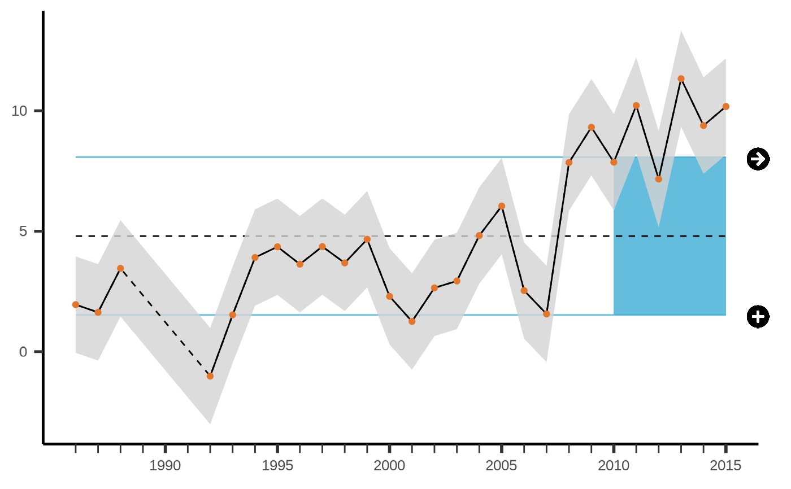
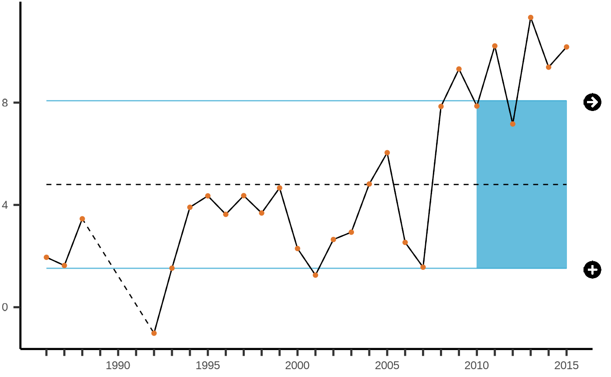
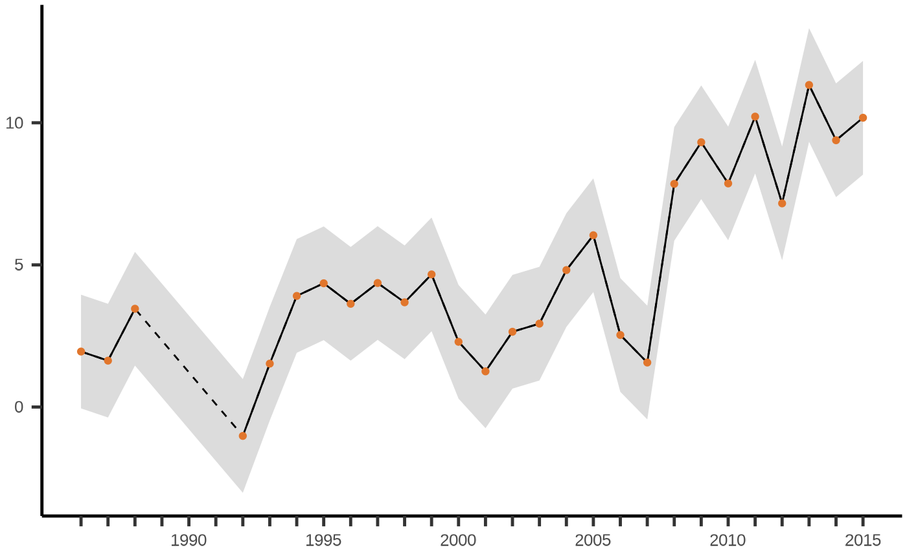

Plot time series in the style of the California Current IEA. Dashed lines are
used in between missing data and points colored by color_pts. Include a
ribbon around y if low (y_lo) and high (y_hi) values are provided.
Include long-term average if add_avg = TRUE with average as a black
dashed line and solid lines indicating the standard deviation in the
color of color_avg. Include rectangle in the color of color_avg
between the standard deviation of the long-term average since x_recent if
provided. Include icons in the right-hand margin for recent trend (→, ↗,
↘) and recent average (o, +, -) if stable, increasing, or decreasing
(respectively) relative to the long-term standard deviation.
plot_ts( d, x = year, y = index, y_lo = SElo, y_hi = SEup, x_recent = 5, units_recent = "years", add_avg = TRUE, add_icons = TRUE, font_size = 24, icon_size = font_size/2, color_pts = rgb(225, 118, 44, max = 255), color_avg = rgb(63, 173, 213, max = 255), color_hilo = "lightgrey", alpha_avg = 0.8, alpha_hilo = 0.8, theme_plot = theme_iea )
| d | Default dataset to use for plotting with
|
|---|---|
| x | column for x axis from |
| y | column for y axis from |
| y_lo | unquoted column for low value to apply to gray ribbon, typically
|
| y_hi | unquoted column for highy value to apply to gray ribbon,
typically |
| x_recent | duration of |
| units_recent | units to describe |
| add_avg | whether to add average as a black dashed line and solid lines
indicating the standard deviation in the color of |
| add_icons | whether to include icons in the right-hand margin for recent
trend (→, ↗, ↘) and recent average (o, +, -) if stable, increasing, or
decreasing (respectively) relative to the long-term standard deviation.
Defaults to |
| font_size | font size. Defaults to 24. |
| icon_size | size of icon font. Defaults to half the |
| color_pts | color for points, as named color (see
|
| color_avg | color for standard deviation lines around long-term average
and rectangle between since |
| color_hilo | color for ribbon around |
| alpha_avg | transparency (0 to 1) for colored elements of long-term average: standard deviation and recent rectangle. |
| alpha_hilo | transparency (0 to 1) for ribbon around |
| theme_plot | theme function to apply to the ggplot. Defaults to
|
This function returns a ggplot object with a caption attribute.
The attribute caption includes a textual summary.
# example time series dataset ts1#> # A tibble: 30 x 8 #> year index Y2 SElo SEup timeseries metric type #> <dbl> <dbl> <dbl> <dbl> <dbl> <chr> <lgl> <chr> #> 1 1986 1.95 1.95 -0.0482 3.95 (a) Trend and recent mean NA current.da… #> 2 1987 1.63 1.63 -0.368 3.63 (a) Trend and recent mean NA current.da… #> 3 1988 3.46 3.46 1.46 5.46 (a) Trend and recent mean NA current.da… #> 4 1989 NA NA NA NA (a) Trend and recent mean NA current.da… #> 5 1990 NA NA NA NA (a) Trend and recent mean NA current.da… #> 6 1991 NA NA NA NA (a) Trend and recent mean NA current.da… #> 7 1992 -1.02 -1.02 -3.02 0.983 (a) Trend and recent mean NA current.da… #> 8 1993 1.53 1.53 -0.473 3.53 (a) Trend and recent mean NA current.da… #> 9 1994 3.91 3.91 1.91 5.91 (a) Trend and recent mean NA current.da… #> 10 1995 4.35 4.35 2.35 6.35 (a) Trend and recent mean NA current.da… #> # … with 20 more rows# defaults to include all options g <- plot_ts(ts1) g#> The index changed by less than one standard deviation of the full time series over the last 5 years (indicated by icon: →). The mean of the last 5 years was more than one standard deviation below the mean of the full time series (indicated by icon: +).#> The index changed by less than one standard deviation of the full time series over the last 5 years (indicated by icon: →). The mean of the last 5 years was more than one standard deviation below the mean of the full time series (indicated by icon: +).# without x_recent, add_avg, add_icons g <- plot_ts(ts1, x_recent=NA, add_icons=F, add_avg=F) g